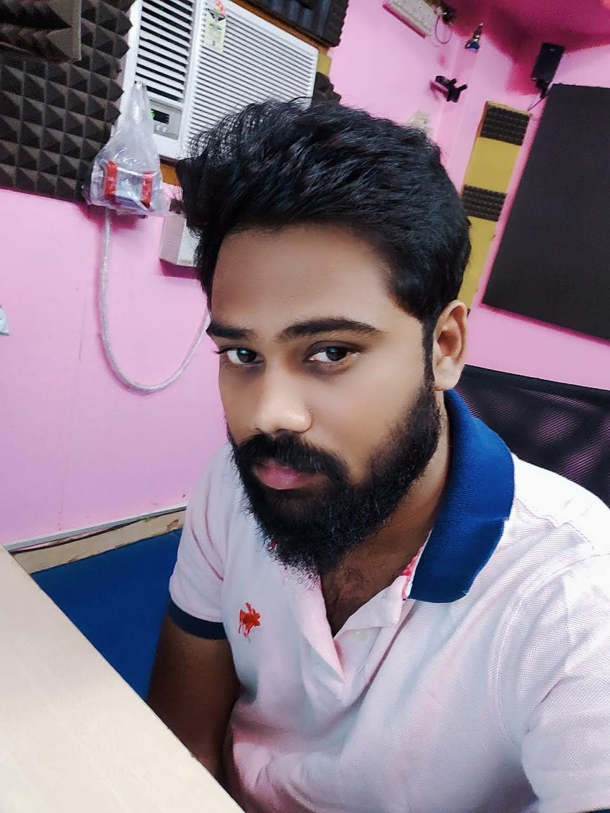

vasantharajsingaram.com
vasantharajsingaram@gmail.com
https://www.linkedin.com/in/vasantharaj-singaram-118662244/
|  |
Vasantharaj SingaramUI/UX Research and Designer AboutI am a UX designer creating compelling user interfaces for early-stage start-ups to help them increase acquisition activation and de-risk their design investment. Being creative entails great responsibility. By designing for this world, we provide solutions for problems and improve the quality of life. |
|
|
vasantharajsingaram.com |
|
|
vasantharajsingaram@gmail.com |
|
|
https://www.linkedin.com/in/vasantharaj-singaram-118662244/ |
| Collection Manager | Balaji Consultancy |
// September 2021 - January 2022
| Freelancer | Audio Engineer | Video Editor | Organizer |
// May 2013 - Febraury 2020
// May 2009 - July 2012
| UX Design Certificate |
// March 2022 - Jul 2022 - Online
Completed a rigorous training designed for entry-level job readiness. 15 modules included topics like: UX research fundamentals, inclusive design, low-fidelity and high-fidelity prototypes, and tools like Figma and Adobe XD. Completed hands-on projects and developed a portfolio including 3 projects to receive the certificate.
| University of Madras | Distance Education |
// June 2022 - Present
Bachelor of Science - Psychology
| Sree Muthukumarasamy College | Regular |
// July 2006 - April 2009
Course Completed (only): Bachelor of Science - Computer Science
Figma // Adobe XD // Operational Knowledge Adobe Photoshop // After Effects // Premiere Pro // Illustrator
DesignUser research // Wireframing // Usability studies // Presentation // Prototyping
LanguagesHTML & CSS // JavaScript (Working Knowledge)
CollaborationCommunicative // Gives design critique + feedback // Strong presenter // Detail-oriented
|
|
riledtv.com |
// Jun 2022 - Jul 2022
UI/UX Designer / WordPress DeveloperMy latest project is to design a responsive website for Ri-led tv and develop the website in WordPress. I designed the logo for the company. Also, I wrote the content for the website. My duties as a UI/UX Research and Design include competitive audits, field research, and user prototype testing. In addition, I worked on both front-end and back-end WordPress development, including designing and implementing themes and plugins. My goal is to create attractive, user-friendly websites that meet the needs of client.